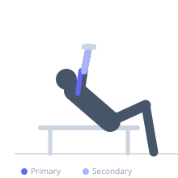
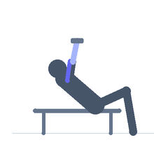

Exercise guide / Incline Dumbbell Curl
Incline Dumbbell Curl
The incline dumbbell curl is performed lying on an incline bench set to approximately 45–60 degrees, with arms hanging behind the torso. This shoulder extension position places the long head of the biceps brachii under a greater stretch at the bottom of the movement, increasing its activation throughout the curl. The long head is particularly stimulated, contributing to the peak bicep appearance and the outer bicep fullness.
Primary muscles
biceps brachii long head
Secondary muscles
biceps brachii short head
brachialis
brachioradialis
Equipment
Dumbbell (Fixed)
Adjustable Bench (Incline / Decline)


Starting position
- Set an adjustable bench to a 45–60 degree incline. Sit back against it with dumbbells in each hand, arms hanging straight down toward the floor. Palms face forward (supinated grip).
Setup
- Adjust bench to between 45 and 60 degrees. Sit fully against the pad. The key is allowing the arms to hang behind the hip line for maximum bicep long head stretch.
Steps
- Step 1: Sit on the incline bench with arms hanging straight down behind the hips. Palms face forward.
- Step 2: Begin from full arm extension — do not start with elbows bent.
- Step 3: Exhale and curl both dumbbells upward simultaneously by flexing the elbows, keeping the upper arms stationary.
- Step 4: Curl to full contraction, then inhale and lower slowly back to full arm extension.
Coaching cues
- Let the arms hang completely free behind you at the bottom — feel the long head stretching
- Keep the elbows pinned back as you curl — do not let them drift forward
Breathing
- Exhale on the curl; inhale on the slow descent.
Range of motion
- Full hang at the bottom (arms fully extended); full curl at the top.
Tempo
- 2-1-3-0 (3-second eccentric to maximize stretch time)
Common mistakes
- Allowing the elbows to swing forward during the curl, reducing the long head stretch
- Using too heavy a weight that shortens the range of motion
Safety
- The hanging arm position can stress the bicep tendon at the shoulder — start with lighter weight
- Do not yank or jerk from the bottom position
Training
- hypertrophy: 8–15 reps
- endurance: 12–20 reps
- hypertrophy: 3–4 sets
- endurance: 2–3 sets
- Rest: {'hypertrophy': 75, 'endurance': 45}